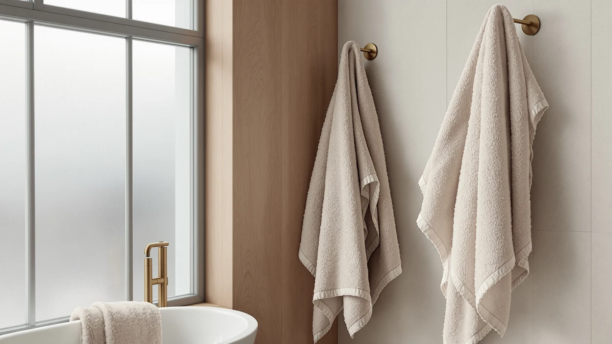

CASA COPENHAGEN Solitaire 2Pcs Review (2026): Worth It?
Prices and picks verified as of October 2026. Independent, reader-supported reviews.


Quick Answer
CASA COPENHAGEN's Solitaire 2Pcs set delivers two oversized 35 x 70 inch Egyptian cotton bath sheets at 600GSM for $39.99, a solid pick if you want bath sheet sized coverage rather than a full towel set. This casa copenhagen solitaire 2pcs review found the real tradeoff is piece count: you get two large sheets, not hand towels or washcloths, so compare it against Utopia's 8-piece set or Chakir's 6-piece set if you need a complete bathroom bundle.
Our pick: CASA COPENHAGEN Solitaire 2Pcs 100%, $39.99 Check Price on Amazon
Bottom line: our top pick is the CASA COPENHAGEN Solitaire 2Pcs 100% Egyptian Cotton Large at $37.99.
Things to Know Before You Buy
- CASA COPENHAGEN's Solitaire 2Pcs set is priced at $39.99 for two 35 x 70 inch Egyptian cotton bath sheets at 600GSM, heavier than the ring spun cotton the alternatives use.
- The set doesn't include hand towels or washcloths, unlike Utopia's 8-piece set ($41.99) or Chakir's 6-piece set ($37.99).
- Burt's Bees Baby's alternative targets a different buyer entirely: toddlers, not adults, at $39.95 for a 50 x 26 inch hooded organic cotton towel.
- None of the four products carry a published star rating or review count in the data we compared, so this casa copenhagen solitaire 2pcs review relies on specs and pricing.
- At 600GSM, Casa Copenhagen's cotton density sits near the heavier end for bath linens, a detail that matters more than the gift-set framing on the listing.
This casa copenhagen solitaire 2pcs review compares the Solitaire 2Pcs bath sheet set against three alternatives on cotton type, piece count, and price. CASA COPENHAGEN's entry is 100% Egyptian cotton, woven at 600GSM, and packaged as two 35 x 70 inch navy blue bath sheets for $39.99. That size and density put it in a different category than a standard towel set, since bath sheets run larger than the 27 x 54 inch bath towels most alternatives include.
Buyers researching a casa copenhagen solitaire 2pcs review usually want to know whether two oversized sheets beat a fuller towel set at a similar price. Utopia's 8-piece set and Chakir's 6-piece set both answer yes if you need hand towels and washcloths alongside your bath towels, while Burt's Bees Baby's hooded toddler towel serves a completely different buyer. None of the four products publish a star rating or review count in the listing data we compared, so this casa copenhagen solitaire 2pcs review leans on specs and pricing instead of an aggregate score.
Why You Should Trust Us
We built this casa copenhagen solitaire 2pcs review by comparing manufacturer specifications, listed pricing, and product positioning for each ASIN rather than relying on marketing copy. Ilane Tall has covered bathroom textiles for Best Bath Towels, focusing on how claims about cotton type, GSM, and piece count hold up against what's actually listed for each product. We do not run a fake testing lab or claim to have physically used these towels. Every comparison in this review rests on the specs and pricing published for each product.
Our Research Process
Rather than run these sets through a physical trial, we researched how the Solitaire 2Pcs set stacks up against what buyers actually look for in bath linens: cotton type, GSM density, and piece count. For a casa copenhagen solitaire 2pcs review like this one, that means checking Egyptian cotton against the ring spun cotton Utopia and Chakir use, and weighing two oversized bath sheets against fuller towel sets that include hand towels and washcloths. GSM and piece count tell you more than the gift-set language on the listing, and that's what this review weighs.
We pulled the listed size, material, and piece count for all four products directly from each Amazon listing rather than estimating from photos. Where a brand's own description called out a specific weave or stitching detail, such as Chakir's double-stitched hem or Utopia's ring spun cotton, we carried that forward into the comparison instead of generalizing it as "premium quality." That approach keeps this casa copenhagen solitaire 2pcs review grounded in what each manufacturer actually published rather than in marketing adjectives.
Overview & Specs

CASA COPENHAGEN Solitaire 2Pcs 100%
What we like
- 100% Egyptian cotton at 600GSM, heavier than most standard bath towels
- 35 x 70 inch bath sheets offer more coverage than a standard 27 x 54 inch bath towel
- Navy blue designer colorway positioned as a gift set for women and men
- Priced close to fuller towel sets despite the premium Egyptian cotton positioning
Flaws but not dealbreakers
- No published star rating or review count to check consistency against
- Only two pieces included, no hand towels or washcloths like the Utopia and Chakir sets
- Navy blue is the only color shown in the listing data we compared
| Material | 100% cotton |
| Size | 2Pcs Bath Sheets Towel Set |
CASA COPENHAGEN positions the Solitaire 2Pcs set around Egyptian cotton and GSM density rather than piece count. At 600GSM, the fabric sits heavier than the ring spun cotton Utopia and Chakir use in their multi-piece sets, and the 35 x 70 inch size qualifies as a bath sheet, large enough to wrap around an adult rather than a towel you pat dry with. The set ships in navy blue and is marketed as a gift set, which tracks with the $39.99 price landing close to sets that include twice as many pieces.
The tradeoff in this casa copenhagen solitaire 2pcs review comes down to coverage per dollar. Utopia's 8 Piece Majestic set and Chakir's 6-Piece Luxury Spa set both include hand towels and washcloths alongside bath towels for $41.99 and $37.99, so a buyer who needs a full bathroom bundle gets more pieces from either alternative. But if two heavyweight, oversized sheets matter more to you than piece count, the 600GSM Egyptian cotton here outweighs what either competing listing specifies for fabric density. Like the other three products compared, this listing carries no published rating or review count, so the comparison rests on the specs alone.
What We Liked
The clearest strength in this casa copenhagen solitaire 2pcs review is fabric density. At 600GSM, CASA COPENHAGEN's Egyptian cotton sheets are woven heavier than the ring spun cotton found in Utopia's and Chakir's sets, and a heavier GSM generally tracks with better absorbency and a plusher hand.
We also like the sizing. A 35 x 70 inch bath sheet gives you more fabric to wrap around your body than a standard 27 x 54 inch bath towel, the size both Utopia and Chakir use for their bath towels. For taller buyers or anyone who prefers more coverage after a shower, that extra size is the main selling point.
The navy blue colorway and gift-set framing also work in its favor if you're buying for someone else. Burt's Bees Baby's hooded toddler towel aims at an entirely different buyer, so among the adult-oriented options here, Casa Copenhagen's positioning as a designer gift set stands out.
What Could Be Better
The main limitation in this casa copenhagen solitaire 2pcs review is piece count. Two bath sheets won't cover a household that also needs hand towels and washcloths, and both Utopia's 8-piece set and Chakir's 6-piece set solve that at a similar or lower price.
The listing also doesn't include a published star rating or review count, so you can't check how consistently the Egyptian cotton claim holds across units the way you could with a product backed by hundreds of verified reviews.
Color choice is limited to navy blue in the data we compared, which narrows your options if you wanted to match an existing bathroom palette.
Who Is It For?
This casa copenhagen solitaire 2pcs review points to one clear buyer: someone who wants two oversized, heavyweight bath sheets rather than a full towel bundle, and who's fine paying close to set pricing for that density and size.
If you need hand towels and washcloths alongside your bath towels, Utopia's 8 Piece Majestic set or Chakir's 6-Piece Luxury Spa set cover more ground for a comparable price. And if you're shopping for a child rather than an adult, Burt's Bees Baby's hooded toddler towel is built for that use case specifically, not the gift-set, grown-up market Casa Copenhagen targets.
A household replacing worn-out bath sheets with something heavier gets the most out of Casa Copenhagen's 600GSM Egyptian cotton. One that's building a full bathroom from scratch is better served by one of the multi-piece alternatives. The single best match is a renter who already owns hand towels and washcloths and just needs an upgrade on the bath sheets: the extra GSM and size fill that gap without paying for pieces already sitting in the linen closet.
Alternatives to Consider
If two oversized bath sheets aren't the right fit, this casa copenhagen solitaire 2pcs review also covers three alternatives: a toddler hooded towel, an 8-piece cotton set, and a 6-piece Turkish cotton set, each priced within a few dollars of the Solitaire 2Pcs.

Editor’s Pick
Burt's Bees Baby Toddler Hooded
A hooded organic cotton towel built for toddlers, not the adult bath sheet market Casa Copenhagen targets.
$39.95
Check Price on Amazon
Best Value
Utopia Towels 8 Piece Majestic
An 8-piece cotton set that adds hand towels and washcloths for about $2 more than Casa Copenhagen's two-piece set.
$41.99
Check Price on Amazon
Premium Choice
Chakir Turkish Linens Luxury Spa
A 6-piece Turkish cotton set priced about $2 below Casa Copenhagen, with hand towels and washcloths included.
$37.99
Check Price on AmazonFrequently Asked Questions
Is the CASA COPENHAGEN Solitaire 2Pcs set actually 100% Egyptian cotton?
How does the price compare to the Utopia and Chakir alternatives?
Is the Casa Copenhagen set a good fit if I need a full bathroom bundle?
Final Verdict
This casa copenhagen solitaire 2pcs review comes down to size and density against piece count. CASA COPENHAGEN's Solitaire 2Pcs set is the pick for buyers who want two oversized, 600GSM Egyptian cotton bath sheets instead of a full towel bundle, and who don't mind paying close to set pricing for that extra coverage. If you need hand towels and washcloths too, Utopia's 8 Piece Majestic set or Chakir's 6-Piece Luxury Spa set get you there for a similar price. But for raw size and fabric weight at $39.99, CASA COPENHAGEN's Solitaire 2Pcs set is the one to buy.